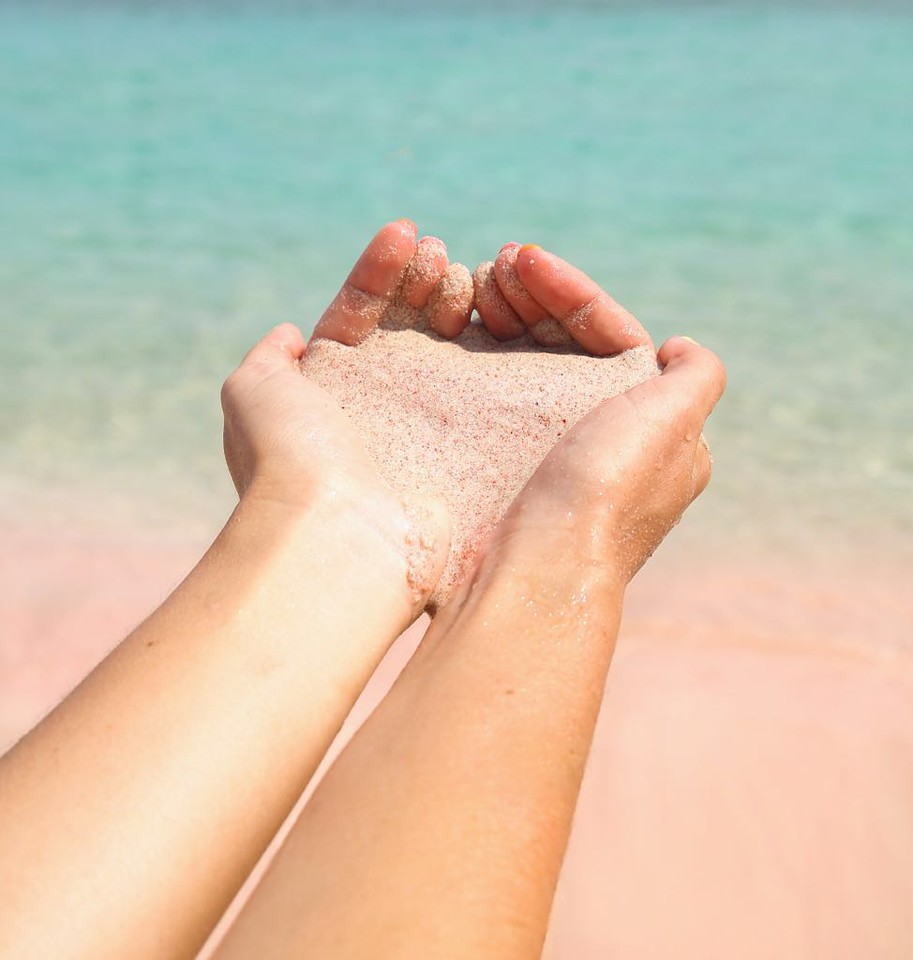

Pantai Pink

 |
1. Pulau Lombok terletak di desa Sekaroh, Jerowaru, Kabupaten Lombok Timur, Nusa Tenggara Barat. 2. Taman Nasional Komodo, Nusa Tenggara Barat |
Pantai Pink tidak hanya menyuguhkan panorama pantai yang indah saja, namun kawasan wisata alam ini juga memiliki kekayaan dan keindahan pemandangan bawah laut yang menarik untuk diselami. Taman di bawah air laut kawasan wisata ini menjadi rumah dari berbagai jenis ikan, terumbu karang dan juga berbagai jenis biota yang lain. Oleh karena itu, diving atau snorkeling di pantai ini menjadi salah satu aktivitas yang sayang untuk dilewatkan. Saat pasir tersapu oleh deburan ombak maka warna pink yang sangat lembut menjadi nampak jelas. Beberapa pendapat menyatakan bahwa warna merah muda tersebut berasal dari pecahan karang merah dan sudah mati yang memang banyak ditemukan di kawasan wisata ini. Pemandangan matahari terbenam disini juga cukup fenomenal. Banyak pengunjung yang rela menunggu senja tiba demi menyaksikan keindahan pemandangan sunset yang terkenal menakjubkan. |
|---|